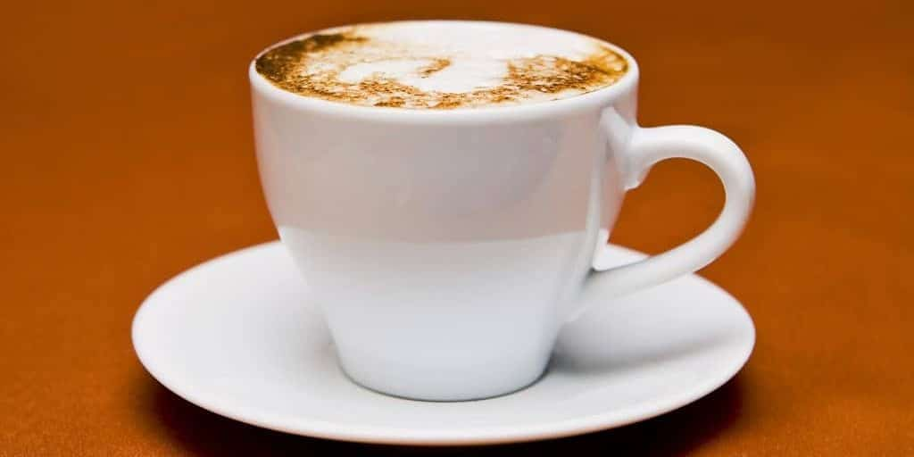

| Görsel | Açıklama | Fiyatı |
|---|---|---|
 |
Espresso: Sıkıştırılmış ve ince öğütülmüş kahveyle birlikte 90 dereceliksuyun 30 saniye boyunca, 9 bar basınçla demlenmesiyle hazırlanıyor. Espresso, 30 mL’lik shot bardaklarında servis edilir. Elektrikli makinelerin yanı sıra ocak üstünde moka pot aracılığıyla da Espresso hazırlayabilirsiniz. İtalyanlara özgü olan Espresso, diğer birçok kahvenin de ana malzemesini oluşturuyor. |
50 TL |
 |
Americano: Espresso’dan daha yumuşak, filtre kahveden ise daha sert içimi olan Americano kısaca, Espresso’nun sıcak suyla seyreltilmiş halidir. Americano’nun sertlik miktarını, Espresso miktarı, Espresso içerisinde bulunan kahve miktarı ve su miktarı ile rahatça ayarlayabilirsiniz. Americano, adından kaynaklı olarak Amerika Birleşik Devletleri’nde içilmeye başlandığı düşünülebilir. Fakat hikaye biraz daha farklı. 2. Dünya Savaşı sırasında Amerikan askerleri, Espresso ile tanışırlar. Kendilerine yoğun, sert ve az gelen Espresso’ya sıcak su ekleyerek kendi damak tatlarına uygun hale getirirler. Böylelikle farkında bile olmadan günümüze kadar ulaşmayı başaran Americano’nun temellerini atarlar. |
40 TL |
|  |
Cappuccino: Espresso, süt ve süt köpüğüyle hazırlanan Cappuccino adını, Capuchin rahiplerinden alıyor. Espresso’dan daha hafif, Latte’den daha sert olan Cappuccino’yu hazırlamak için her bir fincana bir shot Espresso eklenir. Daha sonra süt, 70 dereceye kadar ısıtılır. Burada önemli olan nokta, sütün üzerinde 2 – 3 santimetreye kadar köpük oluşturabilmektir. Sonrasında ısıtılan süt, Espresso’ya eklenir. Cappuccino’nuza sunum zenginlikleri katmak istiyorsanız, çikolata parçacıkları ekleyebilirsiniz. |
65 TL |
 |
Macchiato : Sert ve aromalı bir tada sahip olan Macchiato, Espresso’ya köpüklü süt ilave edilerek hazırlanır. Sıcak süt, mikser yardımıyla köpük haline getirildikten sonra 1 shot Espresso’nun üzerine ilave edilir. Dilerseniz, üzerine Hindistan cevizi ekleyerek servis edebilirsiniz. Macchiato, Long Macchiato ve Latte Macchiato olarak kendi içerisinde ikiye ayrılır. Long Macchiato, 2 shot Espresso ile hazırlanır ve süt köpüğüne ek olarak bir miktar sıcak eklenir. Latte Macchiato ise Latte ile Macchiato arasındaki tatta bir içecek türüdür. |
50 TL |
 |
Latte : İçimi oldukça hafif olan Latte, 1/3 veya 1/5 oranında Espresso’ya süt eklenmesiyle hazırlanır. Üzerine de süt köpüğü konularak servis edilir. İlk olarak buharda ısıtılmış süt bardağa konulur. Süte 1 shot Espresso eklenir ve sütten kalan köpük, bardağın üzerine eklenerek Latte sunuma hazır hale getirilir. |
60 TL |
 |
Marocchino : İtalya’da oldukça fazla tüketilen Marocchino, 1 shot Espresso, süt köpüğü ve Hindistan cevizi tozuyla hazırlanıyor. 1 Shot espresso üzerine süt köpüğünü ekleyin, son olarak da Hindistan cevizi tozunu ilave ederek kahvenizi sunuma hazır hale getirebilirsiniz. Hindistan cevizi tozuna ek olarak kahvenize kakao tozu da ilave edebilirsiniz. |
45 TL |
 |
Frappe: Frappe ilk olarak 1957 senesinde Nestle’nin çocuklara yönelik hazırladığı çikolatalı içecek sayesinde ortaya çıkmıştır. Yunanistan’da yapımına başlanan Frappe için hazır kahveye sıcak değil, soğuk su ekleniyor. 2 tatlı kaşığı çözünebilir kahve, şeker ve 3 yemek kaşığı soğuk suyu, shaker veya mikser yardımıyla karıştırın. Elde ettiğiniz karışımın yarısını uzunca bir bardağa dökün. Üzerine 7 – 8 adet buz küpü ekleyin. Sonrasında soğuk süt ve suyu ilave edin. Karışımdan kalan köpüğü de bardağın üzerine eklediğinizde Frappe’niz hazır. Dilediğiniz takdirde içeceğinizi bir miktar krema veya bir top dondurmayla zenginleştirebilirsiniz. |
40 TL |
|
Filtre Kahve: Öğütülmüş kahve, metal veya kağıt filtre yardımıyla sıcak sudan geçirilerek demlenir. French Press’te hazırlayacaklar ise cam kap içerisine sıcak su ve öğütülmüş kahveyi koyup, bir süre demlendikten sonra metal filtre yardımıyla süzerek filtre kahveyi hazır hale getirebilirler. Dünya üzerinde en çok tüketilen kahve olan filtre kahveye dilerseniz süt, şeker veya krema ilave edebilirsiniz. |
30 TL |
Ürünlerimiz
Gün içerisinde arkadaşlarınızla oturup sohbet etmek için gittiğiniz bir kafede, menüyü istediğinizde onlarca kahve çeşidiyle karşılaşabilirsiniz. Bu kahvelerin adını bilmenizin yanı sıra içeriğini, nasıl yapıldığını, içerisine ne konulduğunu bilmek, vereceğiniz siparişin damak tadınızı karşılamada daha doğru bir tercih yapmanıza olanak tanıyacaktır. Fakat ilk olarak kahve çeşitlerini değil kahve çekirdeklerini tanımakta yarar var.